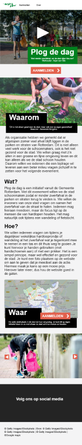

PLOG DE DAG
VORMGEVING 2
WAT IK HEB GEBRUIKT
- BUTTON STATES
- STYLE GUIDE
- VISUELE IDENTITEIT
- MULTI DEVICE LAYOUT
DESKTOP
TABLET
PHONE
De Gemeente Rotterdam organiseerde de campagne Plog de dag. Het doel van de campagne is om zoveel mogelijk mensen - al hardlopend zwerfafval te laten verzamelen. Aan mij was de taak om een responsieve one page website hiervoor te ontwerpen.
ONE PAGE PHONE
1STE MOBIEL VERSIE
De eerste stap in mijn proces was de visuele identiteit te onderzoeken van de Gemeente Rotterdams website. Aan de hand daarvan heb ik een eerste mobiele one page website versie ontworpen.
WIREFRAME SCHETSEN DESKTOP
Een desktop scherm is vrij groot waardoor de lay-out van de content op verschillende manieren kan worden neergezet.
1
2
3
PHONE
DESKTOP
HIFI SCHETSEN
De volgende stap in mijn proces zijn het maken van hifi schetsen en aan de hand van feedback de hifi schetsen verder ontwikkelen tot een eindproduct.
FEEDBACK
Je kan eventueel meer groen toevoegen, ik zie namelijk veel zwart maar op de originele website van de gemeente zie je wel meer groen.
Wellicht is het plaatsen van een video boven een foto niet zo handig.